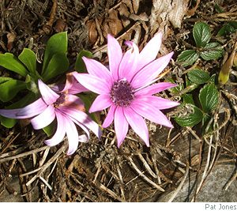

Alison Brackenbury
Album
Oh where did it come from, that web of sound
But the glimmer of grass, the red hair shaken down,
Oh where did it go to, that sweep of the strings
But a hand swinging free, as a swallow tests wings?
What rose between the light and air
What drew us, then thrust us apart?
A child, who stared at the empty chair,
A girl, with a hole through her heart.
Over the field
Soft, flannelled tongues, new cowslips, sleep till spring.
Ragwort hides in wait, its snake’s eye glinting.
One daisy, the long lashes streaked with mud,
Rich grasses light October; oh what good
Can we bring this hot world? But celandine
Springs speckled like a frog. Green and more green
Of slim stems, low hedge-trees, crowd in my eyes.
I float in green’s cool water, Paradise
Glimpsed by a Chinese poet who would take
Rest with the Buddhists. Greens sank through their lake.
He planned safe storage for his final scrolls,
The monasteries. The great men burnt them all.
The small, whom he protected, starved; began
To hack the forests where the gibbons swung.
Is all said? Done? I have not truly seen
One leaf: dock, plaintain, speedwell, green on green.

Alison Brackenbury’s latest collection, is Singing in the Dark, Carcanet, 2008. “A quiet lyricism and delight” ( The Guardian). New poems can be read at her website.
|